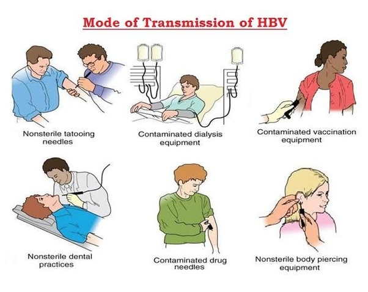

Hepapitis B (HBsAg)
Austria is the first place where Hepapitits A was discovered
Year Originated
1965
Location of Origin
Austria, Europe
Spread of Virus/Disease
Local Pandemic
Precautions required
Apply Vaccine as soon as possible, stay contact with doctor, have healthy habits such as wash
hand frequently, bath and clean frequently, eat and drink clean, boil and avoid junk food

Transmission of hepatitis B virus results from exposure to infectious blood or body fluids containing blood. HBV
is 50 to 100 times more infectious than human immunodeficiency virus (HIV). HBV can be transmitted through
several routes of infection. In vertical transmission, HBV is passed from mother to child (MTCT) during
childbirth. Without intervention, a mother who is positive for HBsAg has a 20% risk of passing the infection
to her offspring at the time of birth. This risk is as high as 90% if the mother is also positive for
HBeAg.
Early life horizontal transmission can occur through bites, lesions, certain sanitary habits, or other contact
with secretions or saliva containing HBV. Adult horizontal transmission is known to occur through sexual
contact, blood transfusions and transfusion with other human blood products,[36] re-use of contaminated
needles and syringes. Breastfeeding after proper immunoprophylaxis does not appear to contribute to
mother-to-child-transmission (MTCT) of HBV.
Symptoms of Hepapitis B
People with Hepapitis B have reported a wide range of symptoms ranging from mild to severe. Symptoms may
appear approximately 6 months after exposure to the virus. Anyone can have mild to severe
symptoms.
Possible symptoms
include:
- Mild fever or chills
- Dark Urine
- Joint pain
- Fatigue
- Nausea or vomiting
- Diarrhea
- Severe Itching
- Yellow eyes
- Abdomen pain
- Losing your appetite
This list does not include all possible symptoms. Symptoms may change with new Influenza variants and can
vary by person. The CDC will continue to update this list as we learn more about Influenza.
The consequences of Hepapitis B

The impact is mostly on woman and children:
HBV infection acquired during infancy and early childhood has a high likelihood of progressing to chronic
infection, which can lead to chronic hepatitis, cirrhosis, and primary hepatocellular carcinoma. In areas of the
world where HBV infection occurs predominantly in infants and young children, routine infant immunization with
hepatitis B vaccine is the most appropriate vaccination strategy. In the United States, the majority of HBV
infections occur in adults with behaviors or occupations that put them at risk for HBV infection. Nevertheless,
infection acquired during infancy and early childhood contributes significantly to the burden of chronic liver
disease in the United States. Until recently, the vaccination strategy in the United States has included HBsAg
screening of pregnant women and vaccination of infants born to infected women and vaccination of people in
groups at high risk for HBV infection. Because of the difficulties in accessing and vaccinating persons from
high-risk groups and the recent findings that HBV infection occurs more commonly among children in some groups
in the United States than previously appreciated, the Immunization Practices Advisory Committee of the US Public
Health Service and the American Academy of Pediatrics in 1991 endorsed a strategy of universal immunization of
infants for hepatitis B. This strategy has the advantages of accessing infants in the United States through
preexisting vaccine delivery systems and vaccinating individuals prior to their engaging in high-risk behavior.
Continued screening of pregnant women for HBsAg is necessary to prevent perinatal HBV transmission and to
identify for vaccination those household and sexual contacts of HBV carriers, a group that is also at high risk
of HBV infection.
Main Treatment
There is no specific treatment for acute hepatitis B. Chronic hepatitis B can be treated with medicines.
Care for acute hepatitis B should focus on making the person comfortable. They should eat a healthy diet and
drink plenty of liquids to prevent dehydration from vomiting and diarrhoea.
Chronic hepatitis B infection can be treated with oral medicines, including tenofovir or entecavir. Treatment
can:
1. slow the advance of cirrhosis
2. reduce cases of liver cancer
3. improve long term survival.
Most people who start hepatitis B treatment must continue it for life.
It is estimated that 12 to 25% of people with chronic hepatitis B infection will require treatment, depending on
setting and eligibility criteria. The ongoing 2023 update of the WHO Hepatitis B treatment guidelines will
expand treatment eligibility and increase the proportion of people on treatment.
In low-income settings, most people with liver cancer present late in the course of the disease and die within
months of diagnosis. In high-income countries, patients present to hospital earlier in the course of the disease
and have access to surgery and chemotherapy, which can prolong life for several months to a few years. Liver
transplantation is sometimes used in people with cirrhosis or liver cancer in technologically advanced
countries, with varying success.
Vaccine for hepapitis B is also an important recommendation with childrens and infants as soon as possible.
Discover other virus and how they devastated the society read more to explore
further.
 30,412,687
30,412,687
 approximately 891,452
approximately 891,452
 6,124,547
6,124,547